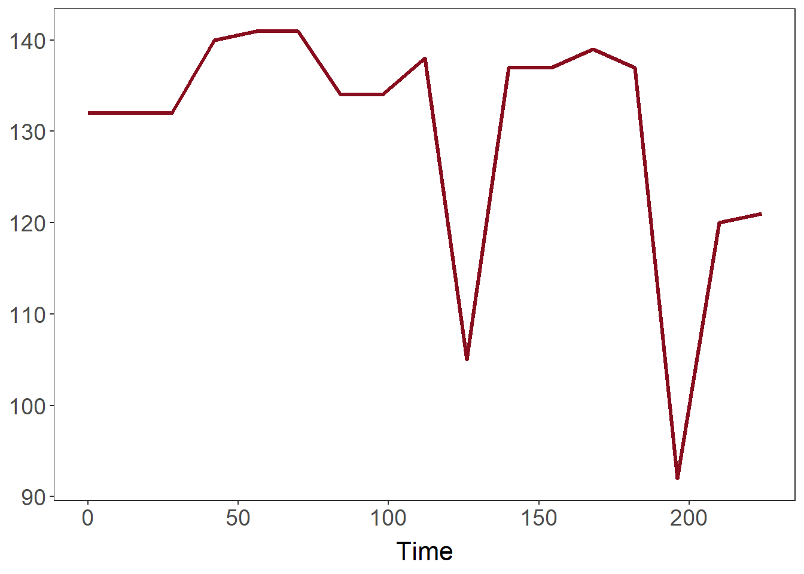

| ID_Number | Time | Blood_Pressure |
|---|---|---|
| 1 | 0 | 121 |
| 1 | 14 | 134 |
| 1 | 42 | 123 |
| 1 | 98 | 127 |
| 1 | 112 | 129 |
Constructing Intervals for the US-CRS
Data Structures
Heart Allocation
R
This article serves as an explanation for the process of creating the 14-day interval data used in “Development and Validation of a Risk Score Predicting Death Without Transplant in Adult Heart Transplant Candidates” by Zhang, Narang, Jasseron, et al., JAMA, Feb 2024.
Note: Any data used in this post are fabricated and are unrelated to the actual data used in constructing the US-CRS model.
1. Setup of the data
One of the more difficult aspects of a statistical project, in my opinion, involves the tidying and setup of your initial data. Outside of coursework, rarely will you see data that is ready to go for analysis. It will often be partially missing, contain errors (especially if a human is involved in entering it, which will likely be the case!), or require some preparation in order to answer a question. We focus on this last aspect here.
The US-CRS model begins with data on patients who are on the wait list for a heart transplant that is available from the Scientific Registry of Transplant Recipients (SRTR). Each patient will have clinical data- think things like blood pressure or lab tests- recorded when they get on the wait list, and recorded again if something occurs, such as being transplanted.
This type of data is often referred to as panel data or longitudinal data. Each candidate also has a time component: how long on the wait list. A person might be on the wait list for 112 days, but have 5 events during these 112 days, each with a new set of clinical data. Start time is when time is 0.
Instead of these uneven chunks of time, we can break the data down into even, 14-day chunks:
| ID_Number | Time | Blood_Pressure |
|---|---|---|
| 1 | 0 | 121 |
| 1 | 14 | 134 |
| 1 | 28 | 134 |
| 1 | 42 | 123 |
| 1 | 56 | 123 |
| 1 | 70 | 123 |
| 1 | 84 | 123 |
| 1 | 98 | 127 |
| 1 | 112 | 129 |
This process is known as discretization, as we are breaking the flow of time on the wait list into even individual, or discrete, blocks. We picked 14 days for each block, since that was the most common amount of time for a patient to spend at a priority level before priority could be reconsidered, according to official Organ Procurement and Transplantation Network (OPTN) guidelines.
We do this so that we can use the most up-to-date clinical data when creating a measure of medical urgency for transplantation. For a situation like the one below, the discrete blocks capture the many changes in blood pressure:

2. The possible problems
The example below has all the chunks divisible by 14, making discretization easier. In reality, data is a lot more messy, and there are some problematic cases to consider:
1. The ending time isn’t divisible by 14.
Instead of 112 days, which is divisible by 14, the wait list total time is 113 days. We include the last block, which goes up to 126 days, despite the individual only spending 1 more day on the list. We do this because that’s when they got their most recent clinical data. On day 112, there’s no way to know what the results of those clinical measurements would be tomorrow.
2. There are gaps between data, which create empty blocks.
The most recent data is used to fill in the gap. If a patient had a blood pressure of 120 at 14 days, and 130 at 42 days, the block for 28 has 120 for blood pressure. This idea is known as carrying forward data, and is used in other official allocation scores, such as the Model for End-Stage Liver Disease (MELD).
What if the very first data point doesn’t exist, so that we don’t observe a value for blood pressure until 42 days? In that case, we use missing data approaches, which replace the gap with a statistical median (middle) value or “normal” values for heart transplant patients obtained from the clinical literature.
3. In a single 14-day block, the data gets updated.
Suppose the data gets updated at 8 days, in the middle of a block. In that case, the update will be transferred to the next block (14 days), to prevent the loss of the original data at 7 days, while also incorporating the newer data. This is how the original data would look:
| ID_Number | Time | Blood_Pressure |
|---|---|---|
| 1 | 0 | 122 |
| 1 | 8 | 132 |
| 1 | 50 | 124 |
And once discretized, it would look like this:
| ID_Number | Time | Blood_Pressure |
|---|---|---|
| 1 | 0 | 122 |
| 1 | 14 | 132 |
| 1 | 28 | 132 |
| 1 | 42 | 124 |
3. Bringing it all together
Returning to the previous example, let’s modify it so that there is now a missing gap in the data:
| ID_Number | Time | Blood_Pressure |
|---|---|---|
| 1 | 0 | 122 |
| 1 | 8 | 132 |
| 1 | 50 | |
| 1 | 60 | 124 |
We want to discretize this example dataset, which has every problem we previously described. We first create the dataset df_setup, and create a counts variable, which represents the number of 14-day blocks. The ceiling function ensures that we do not round down and lose time. For the first row, with 0 days, that still counts as a block, so we change any counts with 0 to 1.
Note: ID number is added here and acts as a sanity check for when you have multiple patients.
df <- data.frame(
'ID_Number' = c(1, 1, 1, 1),
'Time' = c(0, 8, 50, 60),
'Blood_Pressure' = c(122, 132, NA_integer_, 124))
df_setup <- data.frame('ID_Number' = df$ID_Number,
'Counts' = ceiling(df$Time / 14))
df_setup$Counts[df_setup$Counts == 0] <- 1
kable(df_setup, align='c') %>%
kable_styling(position='center', full_width = F)| ID_Number | Counts |
|---|---|
| 1 | 1 |
| 1 | 1 |
| 1 | 4 |
| 1 | 5 |
The goal of the counts variable is to tell us how many times we need to repeat each row of the original data. In other words, we create a new row_reps that gives us a vector of the row number repeated the correct number of times, and can apply it to the original data to form our blocked result, df_blocked (note that the row numbers, 3, 3.1, 3.2, 3.3 show that row 3 have been correctly repeated 3 times):
row_reps <- rep(1:nrow(df), df_setup$Counts)
df_blocked <- df[row_reps, ]
kable(df_blocked, align='c', row.names = T) %>%
kable_styling(position='center', full_width = F)| ID_Number | Time | Blood_Pressure | |
|---|---|---|---|
| 1 | 1 | 0 | 122 |
| 2 | 1 | 8 | 132 |
| 3 | 1 | 50 | |
| 3.1 | 1 | 50 | |
| 3.2 | 1 | 50 | |
| 3.3 | 1 | 50 | |
| 4 | 1 | 60 | 124 |
| 4.1 | 1 | 60 | 124 |
| 4.2 | 1 | 60 | 124 |
| 4.3 | 1 | 60 | 124 |
| 4.4 | 1 | 60 | 124 |
After correcting time, we still need to account for the problematic cases described earlier:
df_blocked <- df_blocked %>%
mutate(
Block = row_number(),
Time = 14 * (Block - 1)) %>%
relocate(Block, .before = Time)
kable(df_blocked, align='c', row.names = F) %>%
kable_styling(position='center', full_width = F)| ID_Number | Block | Time | Blood_Pressure |
|---|---|---|---|
| 1 | 1 | 0 | 122 |
| 1 | 2 | 14 | 132 |
| 1 | 3 | 28 | |
| 1 | 4 | 42 | |
| 1 | 5 | 56 | |
| 1 | 6 | 70 | |
| 1 | 7 | 84 | 124 |
| 1 | 8 | 98 | 124 |
| 1 | 9 | 112 | 124 |
| 1 | 10 | 126 | 124 |
| 1 | 11 | 140 | 124 |
First, the extra blocks are removed. Then, we check on the initial values, final values, and previous values against the original data, row-by-row.
max_time <- ceiling(max(df$Time) / 14) * 14
df_blocked <- df_blocked %>%
group_by(ID_Number) %>%
filter(Time <= max_time | max_time == 0)
for (i in 1:(nrow(df_blocked))) {
ID_at_index <- df_blocked[i, ]$ID_Number
if (df_blocked$Time[i] == 0) {
initial_values <- df %>%
filter(ID_Number == ID_at_index & Time == 0) %>%
select(Blood_Pressure)
df_blocked$Blood_Pressure[i] <- initial_values %>% pull(Blood_Pressure)
}
else if (df_blocked$Time[i] == max(df$Time)) {
final_values <- df %>%
filter(ID_Number == ID_at_index & Time == max(Time)) %>%
select(Blood_Pressure)
df_blocked$Blood_Pressure[i] <- final_values %>% pull(Blood_Pressure)
}
else {
previous_values <- df %>%
filter(ID_Number == ID_at_index &
Time <= df_blocked$Time[i]) %>%
filter(Time == max(Time)) %>%
select(Blood_Pressure)
df_blocked$Blood_Pressure[i] <- previous_values %>% pull(Blood_Pressure)
}
}
kable(df_blocked, align='c', row.names = F) %>%
kable_styling(position='center', full_width = F)| ID_Number | Block | Time | Blood_Pressure |
|---|---|---|---|
| 1 | 1 | 0 | 122 |
| 1 | 2 | 14 | 132 |
| 1 | 3 | 28 | 132 |
| 1 | 4 | 42 | 132 |
| 1 | 5 | 56 | |
| 1 | 6 | 70 | 124 |
What remains is the single missing value, which can be easily fixed by carrying forward the previous value:
df_blocked <- df_blocked %>%
group_by(ID_Number) %>%
fill(Blood_Pressure, .direction = 'down')
kable(df_blocked, align='c', row.names = F) %>%
kable_styling(position='center', full_width = F)| ID_Number | Block | Time | Blood_Pressure |
|---|---|---|---|
| 1 | 1 | 0 | 122 |
| 1 | 2 | 14 | 132 |
| 1 | 3 | 28 | 132 |
| 1 | 4 | 42 | 132 |
| 1 | 5 | 56 | 132 |
| 1 | 6 | 70 | 124 |